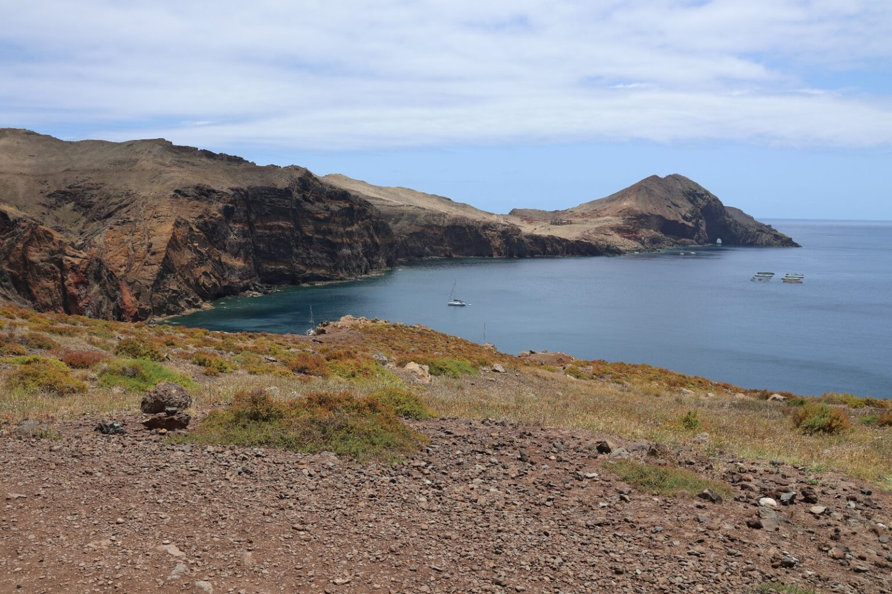
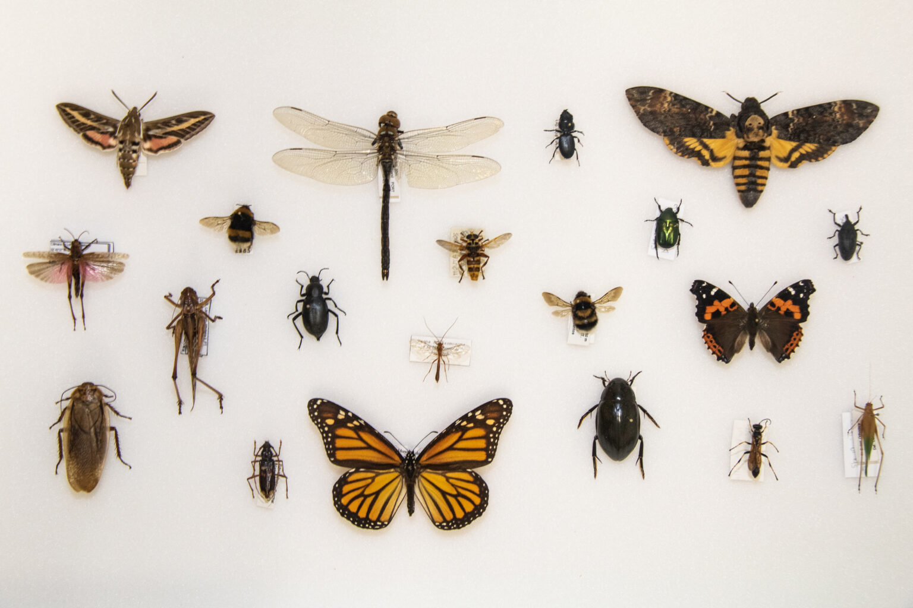
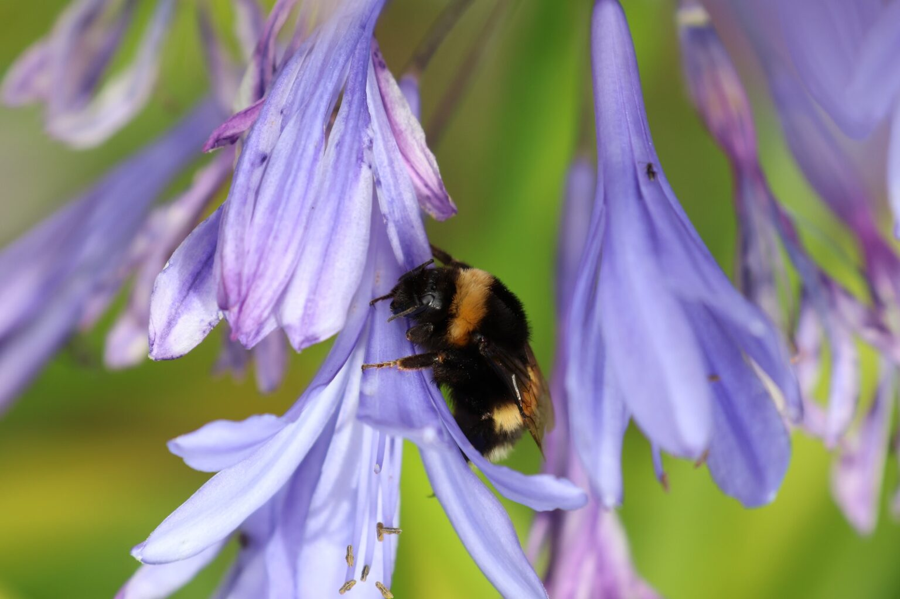
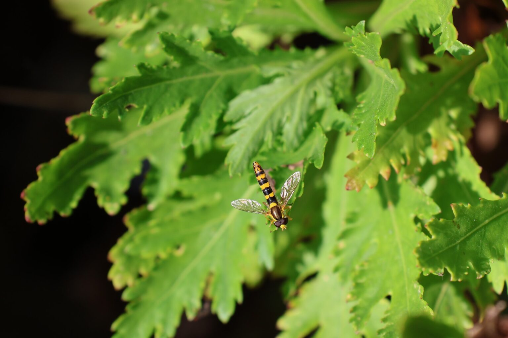

Educação Superior
O laboratório como sala de aula
Esta coleção conta com a contribuição ativa dos alunos que as frequentam, através de pequenas coleções de insetos, integrando o ensino prático com o rigor científico.
4UCs Apoiadas
100%Prático
🌿 Contribuição Ativa dos Alunos
🥼 1º Ciclo em Biologia
🗺️ CTeSP Guias da Natureza
Programas
Unidades Curriculares

Biogeografia Insular
Compreender e conhecer o contributo fundamental dos estudos insulares para a biologia evolutiva.
Saber mais →
Biossistemática
O contributo da taxonomia no estudo da diversidade biológica e aplicação dos seus conceitos básicos.
Saber mais →
Fauna Terrestre
Conhecer e identificar os principais grupos de invertebrados e vertebrados terrestres da nossa região.
Saber mais →
Zoologia I
Conceitos zoológicos, relações evolutivas e adaptações dos animais aos diversos ecossistemas.
Saber mais →
Dúvidas?